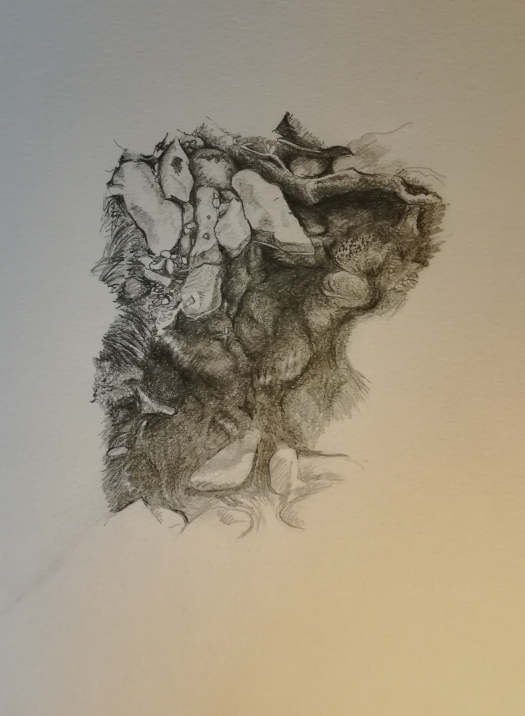
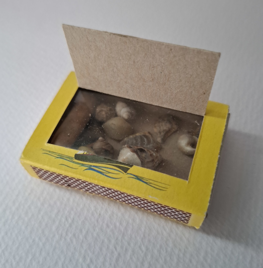

In a world in which billionaires consume everything unfixed as they stumble along the hedonic treadmill to horrified and hate-filled self-realization, and the planet slides with acceleration into the slathering maw of consumerism, scale is a retreat and toolkit. By switching our scale of interest, we can live less impactful, less consuming lives. Children start with a detailed and localized view of the world, which grows with age to stabilise at the scale of our needs for sustenance and shelter, but also at the scale of the accoutrements of modern capitalism. We need to get better at shifting between scales and finding our joy at other, more detailed scales. If we can refactor our capitalist desires to these scales, we can subvert our part on the chain of consumption and free our minds from the continual anxiety of capitalism. With this in mind, “Tiny landscape with treasures” gives two methods for subverting the scale of memory. Firstly, we rescale our focus to concentrate on, and record, micro-worlds, small fragments of joy found in ditches, under logs, trapped in the junction of tree roots, sprouting from old concrete. Get out and draw small!
|
 Stream (2020)
|
Secondly, we take the capitalist impulse, and apply it to the tiniest scales, finding treasures in the smallest patch of roadside mud, a handful of beach sand, the detritus trapped in an old tire. Take a small matchbox, drop to your knees and dig your hands into the oomska! Find those treasures! Rewired your brain! If you have kids, they will certainly be able to help for they are the hierophants of this mysterious world. Decorate the box and place it with the most important things of your life as a continual crowbar memoire: if we can find joy in the wing of a beetle, a tiny snail shell, a stone shimmering with a smear of petrol, we can free up space in our lives in which to fight for a better society and a safer world.
